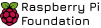

"Hello, Sharing world"
The launch event is your opportunity to meet and mingle with members of the Centre's research team and listen to a series of short talks. We are delighted that Prof. Mark Guzdial (University of Michigan), who many readers will be familiar with, will be travelling from the US to join us in cutting the ribbon. Mark has worked in computer science education for decades and won many awards for his research, so I can't think of anybody better to be our guest speaker. Our other speakers are Prof. Alastair Beresford from the Department of Computer Science and Technology, and Carrie Anne Philbin MBE, our Director of Educator Support at the Foundation.
Please contact us per Email for any further questions about
Raspbian Community Conference 2022
dev.aakashv@gmail.com
Raspberry Pi Foundation 2011 Logo Competition
Raspberry Pi Foundation logo was decided through logo competition on October 2011
See the past Conferences
Take a look at two past Raspbian Community Conferences which took place first in Phoenix, Arizona, USA and other in
Philadelphia, Pennsylvania , USA